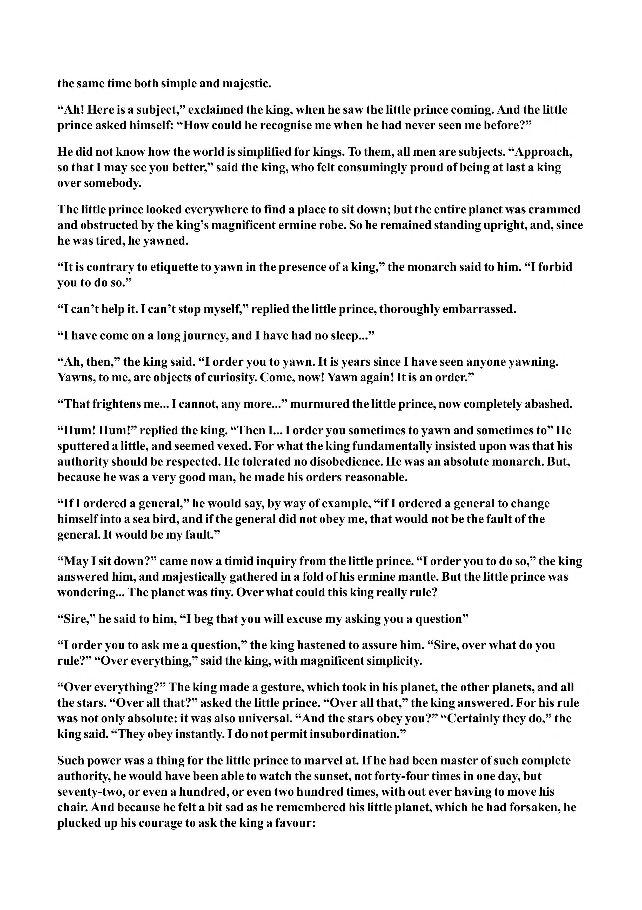

the same time both simple and majestic. “Ah! Here is a subject,” exclaimed the king, when he saw the little prince coming. And the little prince asked himself: “How could he recognise me when he had never seen me before?” He did not know how the world is simplified for kings. To them, all men are subjects. “Approach, so that I may see you better,” said the king, who felt consumingly proud of being at last a king over somebody. The little prince looked everywhere to find a place to sit down; but the entire planet was crammed and obstructed by the king’s magnificent ermine robe. So he remained standing upright, and, since he was tired, he yawned. “It is contrary to etiquette to yawn in the presence of a king,” the monarch said to him. “I forbid you to do so.” “I can’t help it. I can’t stop myself,” replied the little prince, thoroughly embarrassed. “I have come on a long journey, and I have had no sleep...” “Ah, then,” the king said. “I order you to yawn. It is years since I have seen anyone yawning. Yawns, to me, are objects of curiosity. Come, now! Yawn again! It is an order.” “That frightens me... I cannot, any more...” murmured the little prince, now completely abashed. “Hum! Hum!” replied the king. “Then I... I order you sometimes to yawn and sometimes to” He sputtered a little, and seemed vexed. For what the king fundamentally insisted upon was that his authority should be respected. He tolerated no disobedience. He was an absolute monarch. But, because he was a very good man, he made his orders reasonable. “If I ordered a general,” he would say, by way of example, “if I ordered a general to change himself into a sea bird, and if the general did not obey me, that would not be the fault of the general. It would be my fault.” “May I sit down?” came now a timid inquiry from the little prince. “I order you to do so,” the king answered him, and majestically gathered in a fold of his ermine mantle. But the little prince was wondering... The planet was tiny. Over what could this king really rule? “Sire,” he said to him, “I beg that you will excuse my asking you a question” “I order you to ask me a question,” the king hastened to assure him. “Sire, over what do you rule?” “Over everything,” said the king, with magnificent simplicity. “Over everything?” The king made a gesture, which took in his planet, the other planets, and all the stars. “Over all that?” asked the little prince. “Over all that,” the king answered. For his rule was not only absolute: it was also universal. “And the stars obey you?” “Certainly they do,” the king said. “They obey instantly. I do not permit insubordination.” Such power was a thing for the little prince to marvel at. If he had been master of such complete authority, he would have been able to watch the sunset, not forty-four times in one day, but seventy-two, or even a hundred, or even two hundred times, with out ever having to move his chair. And because he felt a bit sad as he remembered his little planet, which he had forsaken, he plucked up his courage to ask the king a favour:
